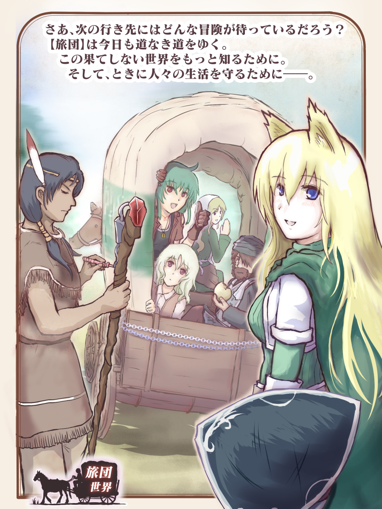
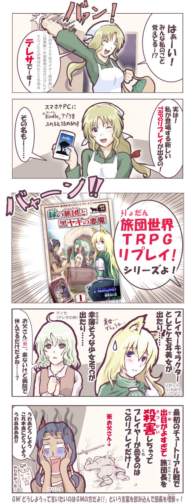
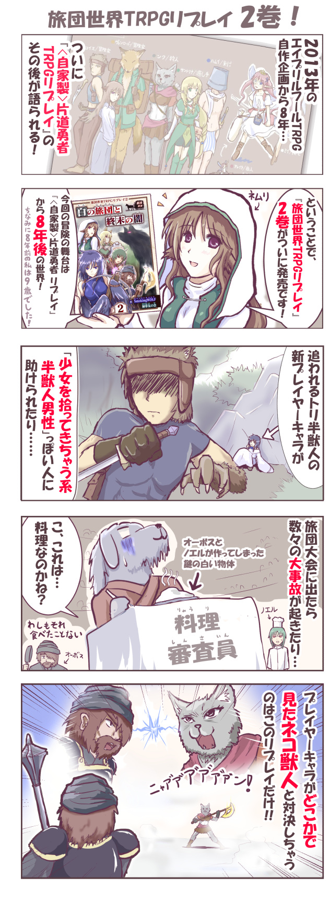
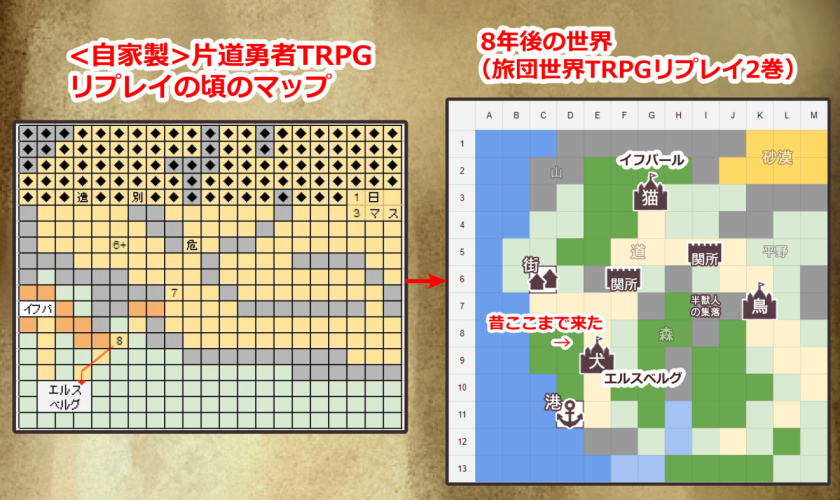
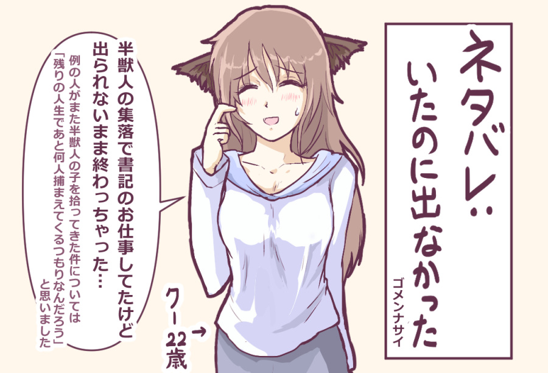

| ||||
|
【更新履歴】 2022/08/27 第3巻の前日譚のリプレイ動画をアップしました。 2022/08/27 第3巻『夏の旅団と神秘のカード』を発売しました。 2021/05/12 第2巻の紹介を追加！ 2021/03/13 第2巻『白の旅団と終末の闇』を発売しました。 2020/03/07 第1巻『緑の旅団と黒ヤギの悪魔』を発売しました。 |
|  | 【タイトル】 旅団世界TRPGリプレイ （シリーズ作品） 【ジャンル】 物語/Kindle電子書籍 【Kindle書籍】 Windows/Android /iOSで読めます 【販売ページ】 ※Kindle版、Amazon購入ページへ 第1巻『緑の旅団と 黒ヤギの悪魔』 第2巻『白の旅団と 終末の闇』 第3巻『夏の旅団と 神秘のカード』 定価￥924(税込) * このTRPGのルールは 無料で公開されています 旅団世界TRPG 基本ルール |
【紹介PV】
【簡単なご紹介】 『旅団世界TRPGリプレイ』は、『旅団世界TRPG』というテーブルトークRPGを遊んだ様子を物語風にまとめた本です！ そこにあるのは「ゲームマスターであるSmokingWOLF(スモーキングウルフ)が送る世界とキャラクターたち」、「プレイヤーたちの機転と決断」、 「サイコロが巻き起こすカオス」の3つが混ざり合ってつむがれていく冒険の物語！ 『片道勇者』の後の世界をベースとした、ボリュームたっぷりで送るリプレイシリーズ、よければぜひお楽しみください！ |
<旅団世界TRPG へのコメント> Now Loading... 【ご感想ツイートまとめ】 |
【 ページ内目次 】
※全て同ページ内へのリンクなので、
そのまま下へ読み進めていってくだされば全部見られます。
1. 【旅団世界TRPGリプレイ 内容見本】
|
以下は『旅団世界TRPGリプレイ①』のKindle版内容見本です。 クリックで拡大できます。
|
| もっとリプレイを見てみたい人は…… | |
|
1巻の第1話である『チュートリアル回』はWebで無料公開されていますので、『旅団世界TRPGリプレイ』がどんなものか実際に読んでみたい方はこちらもぜひどうぞ！ ↓ 旅団世界TRPGリプレイ 『チュートリアル』回（無料） 【旅団世界TRPGリプレイ動画『見習いたちの旅団講習』】 旅団員ライセンスを取得すべく、旅団講習に参加した見習いのクバ・パピオリア・ティセの3人。ところが講習の最中に不慮の事態が発生してしまい、3人は訓練場の医務職員シェリルと共に状況把握に動くことに。果たしてこの状況の中、彼らは生き残ることができるのか！？ リプレイ第3巻の前日譚となる物語！ 【前編】 【後編はこちら】 | |
2. 【購入したい人へ】
この本は、スマートフォンやタブレット端末などがあればどこでもご覧になることができます。
| Kindle書籍 『旅団世界TRPGリプレイ』 購入はこちら | |||||||||||||
【Kindle書籍を読むためにインストールが必要なソフト】 この本を読むためには、Amazonのアカウントを持っている他に、 Windows、Android、iOSなど各端末に対応したKindleのアプリケーションを インストールする必要があります。 【Windows(PC)版 Kindleダウンロードページ】 【Android(スマホ)版 Kindleダウンロードページ】 【iOS版（iPhone/iPad） Kindleダウンロードページ】 |
|||||||||||||

{kind=link}
{kind=link}
{kind=link}
3. 【内容紹介】
3-1. 【第1巻の紹介】
【1巻紹介マンガ！】
| ◆初めての人へ 「そもそもTRPGリプレイって何？」 | ||
|
このサイトの「TRPGリプレイ」をご存じの方は言うまでもないかもしれませんが、『TRPGリプレイ』とは、 ・GMを含め、複数人のプレイヤーが一同に集まって ・GMが説明するシナリオに対し、プレイヤーの人がキャラクターを演じ、試行錯誤したりミッションをこなしたり能力を使ったりいちかばちかの挑戦でサイコロを振ったりしてお話を進めていく。 という、『TRPG』を遊んだプレイ風景をお話としてまとめたものです。 【TRPGプレイ風景の見本（※これはリアルの光景ですが、私たちはオンラインで遊んでいます）】  これまでも自作ルールや商用ルールでリプレイを作ってきていますが、今回も同じ流れで自作のルール『旅団世界TRPG』を用意し、割といつも通りなスモーキングウルフワールドが展開されます！ 『旅団世界TRPG』のルールにも興味があるぜ！ という熱心な人はこちらから！ 基本ルールは無料公開されています。 ↓ 『旅団世界TRPG 基本ルールページ』（無料） ルールページはスマートフォンにも対応！ 入力可能なPDFキャラクターシートもご用意しておりますので、必要に応じてご利用ください。 |
| ◆旅団世界TRPGリプレイの舞台 | ||
|
＜物語の舞台＞ それは6人の旅人が『闇』に立ち向かった冒険の時代から8年ほど後のこと。 世界を覆わんとする『闇』の脅威が人知れず討ち払われた後の、遠い大陸でお話が始まります。 今は『旅団』が世界を駆けめぐる時代。 『旅団』は数名から数十名で構成されており、冒険や護衛、ときには行商を行いながら遙かなる大地を、そして時には海を横断して旅をしています。 プレイヤーキャラクターたちが参加する『グリーンタイド旅団』もそんな旅団の一つです。 そして『旅団』の真価は、街で暮らす人たちには想像も付かないような【新たな大地・街・島・世界】を旅すること！ ときにはとんでもない場所に迷い込むこともあるでしょう。 場所によっては蒸気機関なるものがあるかもしれません。 機械の人間だけが住む帝国がどこかにあるかもしれません。 魔法が存在しない地域があるかもしれません。 不思議な扉を通じて別世界に飛び込むこともあるかもしれません。 旅団の長老でさえ、この世界は未知だらけなのです。 そんな中、様々な大地へと旅をするのがこの『旅団世界TRPGリプレイ』の物語！ さあ、次の行き先にはどんな冒険が待っているのでしょうか？ それは神とサイコロと旅人の足だけが知っています……。 |
| ◆第1巻 もっとぶっちゃけた説明 | ||
|
こちらはもっとぶっちゃけた説明を聞きたい人向けの内容！ ＜過去の作品との関係は？＞ まず、 「これシルフェイドとか片道勇者と関係あんの？」 というのが一番気になるのではないかと思いますが、この作品はなんと、『片道勇者』の世界とつながっています！ もっと正確には『＜自家製＞片道勇者TRPGリプレイ』の世界の、何年か後の世界となっています。 （といっても、知ってれば少しニヤリとできる程度の繋がりなのでご安心ください） 「過去のプレイヤーキャラはどこいったんだよ！」 という話は1巻では触れられませんが、2巻からこっそりそれっぽい人が出たりもするかもしれません。 ＜この世界で何が展開されるの？＞ この旅団世界は、私、スモーキングウルフが作ったゲーム作品の小ネタをチャンスがあれば盛り込むことを狙った作品です。 つまりシルバーセカンドの過去作に関係したキャラクターが出たり、ちょっとだけ関連設定が登場したりするのです。 2巻以降も「薬師ネムリ」や『闇』など、知ってる人が多そうなキャラや設定が登場予定！ 原作の公式二次創作的なお祭り世界として活用できればと考えています。 ＜お話はすみずみまでスモーキングウルフ味！＞ 私が全てのシナリオを作っててGM(ゲームマスター）をしているのですから当然ですが、 お話は全体どこをとってもだいたいスモーキングウルフ味です！ 表向きには明るく進んでいくけれど、ところどころに残酷な部分や生々しい部分、 予想外に情けない部分が潜んでいる。 そしてたまに、NPCからプレイヤーキャラへの好感度が跳ね上がりすぎて めちゃめちゃなことになるイベントが起きる――。 私のゲームでも非常によくある展開ですね！ 放っておくとそんなの作っちゃう人間がGMをやると、やっぱりTRPGでもそうなるようです。 ＜サイコロの言うことには従うカオス展開！＞ どんなにめちゃめちゃな流れになっても、私はサイコロの出た目は基本的に尊重するプレイをします。 なので、「なんでサイコロの女神様はこんな結果をお選びになったんだ！？」 と思っても、GMたる私はだいたいその結果を採用して押し進めます。 コンテンツ的には「GMの考えたストーリー重視」の方向性にも見えるかもしれませんが、 どちらかというと本作はランダム感も最大限に楽しんでいくプレイのつもりです。 たとえばこれからお世話になる旅団の団長にクリティカルで大ダメージを与えてしまい、生死判定のサイコロ処理にも成功せずに死んじゃったとしたら、安易に生き返らせずにそのまま団長の死を受け入れてお話を進めますし、男の子NPCがサイコロの間違いでうっかりおっさんキャラを好きになってしまってもそのまま進めます！ そういう場面が来ると、ちょっと焦ると同時に「おいしい展開来た！」と思うのが私です。 なので、 「理想通りにいけば普通のいい話になってるかもしれないはずが、どうしてこんなことになっちゃうんでしょうね？」 という展開をたびたびお楽しみいただけるでしょう。 ＜プレイヤーが優秀、もとい経験が豊か！＞ プレイヤーが全員かなり経験のあるゲーム開発者であり、かつ数値に強いゲーマーでありながらリアルのお仕事もこなせる人たちなので、先読み能力や、問題への対応力が全体的に半端なく高いです。 また、ゲーム内とはいえ「実際の社会でもこういう対応は割と通用するよね」と思えるアクションや言動をしっかり取ってくれますし、さすがにうまくいかなさそうな言動だったら私も通さないので、「大人はこうやって問題を解決するんだよ」という一つの簡単な見本となるようなムーブを見たい、見せたい人には、このリプレイは地味におすすめの内容ではないかと考えています。 私が小学生の頃に読んだTRPGリプレイでも、「大人にとっては当たり前」だと感じられる普通の対応をしている場面でさえ、子供の自分にとってはすごく貴重な勉強になりましたからね！ なので、若い方にこそおすすめしたい！ 小学生高学年以上の方なら快適にお楽しみいただけるように漢字のルビもしっかり振ってありますので、その点もご安心ください。 若い方もどんどんTRPG沼に誘い込んでいきたいと思います！ よければお子様に活字（？）を読ませたい親御さんもよろしくお願いします！ 健全な内容かは分かりませんが！ ネットでたまに出るエッチな広告よりは「だいぶ安全」な大人になる過程で必要そうな刺激くらいは入っております！ でも「なぜかケモ耳っ子に目覚めた」とか言われたら私のせいです、ごめんなさい。 ＜ボリュームはたっぷり！＞ 基本的にこれは、 「なんでもいいからスモーキングウルフ味のモノを喰いてぇ！」 というファンの方の需要をボリューム重視で満たす方向性の商品です！ 1巻でも6セッション分、お話としての「1キャンペーン分」まるごとお楽しみいただけます。 1ページ1ページに新しい発見が詰まってたり、5分に1回笑えるほどの密度はないかもしれませんが、皆さんにとっても気楽に読み続けられそうなくらいの面白さはある……と、いいなと思っております！ ＜人気投票も！＞ いつも通りキャラクター人気投票を開催しております！ たとえば第1巻の巻末から1巻の人気投票をおこなうことができます。 すでにコメントをいくつかいただいております。みなさまのあたたかい人気投票コメント、本当にありがとうございます！ ＜ＧＭ宛てや拍手でいただいた人気投票コメント＞ ・今回も素晴らしいストーリー展開で、とてもワクワクドキドキしながら読み進めることが出来ました！ 次の巻もほんと楽しみです！ ・終始笑いながら見てました。学生で帰ってからすぐ読み始めたのですが気づいたら朝、楽しかったです。ありがとうございました。 ・冒頭のＰＬ紹介だけで「あっあの人だ」と察せられてしまう辺り読者的にも付き合いの長いメンツにニヤリとしつつ、最後まで波乱万丈の展開を楽しませていただきました。 ・いやー笑かしてもらいました。笑かしつつもダーク成分もゴリッと読者の正気度削りに来ますね。うーんさすがウルフ印。 ・今回は特に長い期間が空いていたり、ダイス目が大事故を引き起こしまくったりで色々と大変そうに見えましたが、苦みを残しつつも割と理想的な展開でエピソードを終えられたようで何よりです。もちろん次巻も楽しみに待たせていただきます。 |
| ◆第1巻の登場キャラクター！ | ||||||||||||||||||||
このリプレイで登場するプレイヤーキャラクターを、過去の実績と合わせてご紹介！
そして以下はNPCキャラクター！
|
||||||||||||||||||||
3-2. 【第2巻の紹介】
| ◆第2巻のあらすじ | ||
|
それは6人の旅人が『闇』に立ち向かった冒険の時代から8年後のこと。 世界を覆わんとする『闇』の脅威が人知れず討ち払われた後、その島『シールダルク島』では穏やかな日々が続いていました。 シールダルク島の端には、3つの獣人たちの国がありました。 イヌビトの国エルスベルグ、ネコビトの国イフバール、トリビトの国フェザーランドです。 昔は国々のあいだで争ったこともありましたが、今は3国の王族が協力しあい、平和な日々が続いていました。 ところがある日、フェザーランドで暴動が起き、国の領主が殺されてしまう事件が起きます！ 領主の娘でありながら隠れ住むように暮らしていた半人半鳥の少女クバは、半獣人の集落へと逃げ延びるべく、街を離れます……。 その頃、『大陸』では半獣人の薬師ネムリが、今回の物語の主人公たちであるリゼットらが設立した『ホワイトドーン旅団』に志願しようとしていました。 彼女は『闇』が生まれた島、シールダルク島の出身だと言います。 ネムリは、何らかの目的でその島へ渡ろうとしているようなのですが……。 また、リゼットたち『ホワイトドーン旅団』も『旅団大会』に参加すべく、シールダルク島へと渡ることになります。 しかし「旅団大会」で盛り上がりを見せる中、よみがえりつつある『闇』の気配が、徐々に島に立ちこめていき……。 そして現れた『闇』は、人類が止めるにはあまりにも強大すぎる敵でした。 絶望的な状況の中、それでもホワイトドーン旅団は『闇』に立ち向かっていきます。 それがたとえ、一つの命では勝てない戦いだとしても――。 |
| ◆第2巻の登場キャラクター！ | ||||||||||||||||||||||||
2巻のリプレイで登場するプレイヤーキャラクターを、過去の実績と合わせてご紹介！
そして以下は今回の新NPCキャラクター！
|
||||||||||||||||||||||||
| ◆第2巻のぶっちゃけ説明！ | ||
|
＜旅団世界リプレイ2巻で自家製リプレイのキャラが出てくるの！？＞ 『旅団世界TRPGリプレイ 2巻』では、キャラクター面だと前述のように「半獣人女子を拾ってきちゃう系男性」っぽい人とか「某ネコ獣人」っぽい元PC(プレイヤーキャラクター)が登場します！ まともに会話があった元PCは3人くらいです。 （「イメージ的にこのPCが罪のない少女を斬ると考えにくいよな！」ということで出番がNPCに差し替わったり、タイミングが悪くて出せなかったPCはいました、ごめんね……） ＜舞台は自家製片道TRPGのラストマップ付近！＞ また、「冒険の舞台」に関しては自家製からほぼ引き継ぎです！ 比較した図は以下の通り！ 左が自家製片道勇者、右が旅団世界2巻の舞台となっております。よく見ると……。  なお、2巻を読んでくださった人の中に当時のマップや登場人物を覚えているかたがいらっしゃって、GMがこっそり大喜びしていました。 ＜その他＞ Q. 1巻読んでないけどいきなり2巻から読んで大丈夫！？ 大きなお話としては2巻だけでまとまっているので、2巻からでもお楽しみいただけるようになっています！ （なお、ルール説明がより詳しく書かれているのは1巻です） ・1巻のNPCがからんでくる度合いは、シーン的には10％以下（情報量的には5％以下）で、話題にあがる過去キャラや過去話、文脈が分かりにくそうな部分には随時、補足説明を入れています。 ・ルールは、「2D（サイコロ2個）＋能力値」で行動がうまくいったかどうか出すスタイルは『＜自家製＞片道勇者TRPGリプレイ』通り！ 戦闘ルールだけ＜自家製＞とちょっと違いますが、実際のリプレイを見ればすぐ慣れると思います。 これらの点だけあらかじめご理解いただければ、2巻からでもおおよそ問題なくお楽しみいただけると思います！ Q.ところで自家製リプレイにいた「あの半獣人の少女」は出ますか！？  |
4. 【あとがき】
| ◆最後に | ||
|
ここまで読んでくださってありがとうございます！ この『旅団世界』シリーズは、「移動時間や私が寝込んでいるときなど、パソコンに触ることができない時間を使って何かできないか」という考えのもと、メイン開発に影響の少ない労力でお出しできそうな物語コンテンツとして『TRPGリプレイ』を刊行していくプロジェクトです。 すでに初期目標としていた『3巻』は無事に出せましたので、いったんは定期刊行を休憩して、本か、本以外にも何らかのリプレイを不定期に出していきたいと考えております！ 今後とも、『旅団世界TRPGリプレイ』をゆるく見守っていただけますと幸いです。 |
『旅団世界TRPGリプレイ』シリーズの今後の展開もお楽しみに！
読んでくださった方はKindle本の最後から、人気投票や本の評価もお待ちしておりまーす！
それでは、ここまで読んでくださったみなさま、本当にありがとうございました！
Copyright(C) SmokingWOLF All rights reserved